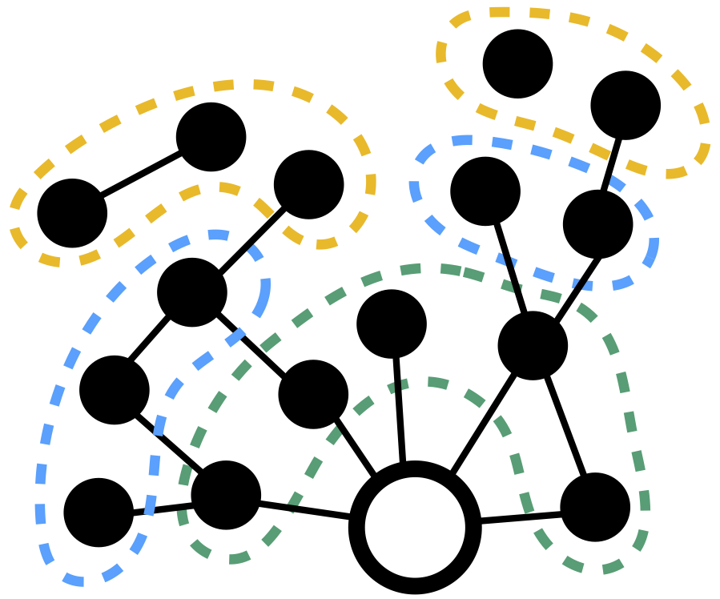

Jan Overgoor
Hi there! I'm a data scientist and PhD candidate in the MS&E department at Stanford University. My interests include polarization, modeling culture, social mobility, trust, and criminal justice. I currently work with Johan Ugander, Sharad Goel and Amir Goldberg.
Before coming back to school, I worked at Airbnb on search, experimentation, knowledge sharing, and building out the data science team. I occasionally do part-time data science consulting.
You can contact me at overgoor {at} stanford {dot} edu
|
Social network formation during and after college
We study the impact of going to college on people's social networks, using a large data set of networks from over 1k colleges in the U.S. We compare the structure of the resulting networks, the network formation processes, the role of homophily, heterogeneity across schools, connections between schools, and the long-range impact of networks formed during college years. This project is done in collaboration with Bogdan State and Lada Adamic. |
|  |
Choosing to grow a graph
We apply discrete choice models to study social network formation. A large number of existing network formation models (including preferential attachment, triadic closure, node fitness, and homophily) can be unified within a discrete choice framework. The ability to sample data, as well as the existence of theory and software routines, make it easy to fit these models to large graphs. Work on this project was done in collaboration with Johan Ugander, Austin Benson, and George Pakapol Supaniratisai. |
|
Cultural integration following corporate mergers
We trace the cultural integration of three firms based on analysis of email content before and after their subsequent mergers and explore how patterns of cultural assimilation that individuals follow after the merger relate to their subsequent career outcomes. This project is part of the Computational Culture Lab in collaboration with Anjali Bhatt, Amir Goldberg, and Sameer B. Srivastava. |

|
A large-scale analysis of racial disparities in police stops across the United States
Using public record requests we compiled and analyzed a large dataset of about 100M traffic stops in the U.S. We find that minority drivers are persistently more likely to be cited, searched, and arrested than white drivers. We also looked at the impact of marijuana legalization in Washington and Colorado. We released the data, for other researchers to work with. This work is part of the Stanford Computational Policy Lab and done in collaboration with Emma Pierson, Camelia Simoiu, Sam Corbett-Davies, Vignesh Ramachandran, Cheryl Phillips, and Sharad Goel. |
|
|
Product data science at Airbnb I was at Airbnb from 2012 to 2016, as the first data scientist working on product. I worked with teams across the company, but my main focus was search. I also worked on data tools, including the experimentation platform and a system to share knowledge and findings within the company. I wrote a few external blog posts during my time there on: search, experimentation, and the knowledge repository. |

|
Trust in the CouchSurfing community
I worked with CouchSurfing to study how trust gets signaled and propagated in the community. We found linguistic markers that are highly predictive of distrust, and that trust relations are transitive enough to improve predictions of the valence of new ties. This work was done with Bogdan State, Ellery Wulczyn, and Chris Potts. |